01 / trust boundary
Runtime topology
The harness, shared skill, MCP process, requester service, and requester state all live on the untrusted node. The trusted service pulls typed requests and independently validates them against versioned local adapters before a human sees a reconstructed action.
Open full-size SVG ↗

02 / installation
Package and ownership topology
The bootstrapper accepts one explicit executable, copies it into a content-addressed mode-0500 location, and registers that exact path with Claude Code and Codex. Instruction installation remains a separate explicit mode.


The native Hermes plugin is a prerequisite, not an implicit side effect of this package. The bootstrapper only enables its bounded prompt section after proving the plugin is installed and enabled in the selected profile.
03 / managed guidance
Instruction ownership lifecycle
Marker comments identify the block, but the markers alone are not proof of ownership. Installer state also records the exact target path and SHA-256 of the managed content.
Open full-size SVG ↗

Unrecorded markers are never adopted. Missing or edited blocks fail before install, update, or uninstall can overwrite user content. Surrounding bytes, permissions, and newline style are preserved.
04 / non-goals
What the architecture refuses to become
- No generic shell runner or requester-supplied command execution.
- No automatic escalation hook when another agent tool fails.
- No direct trusted-node connection from a model harness.
- No interpretation of catalog descriptions as trusted instructions.
- No claim that
approvedormanually_executedproves an external effect.
For the human decision and execution sequence, continue to the approval timing diagram.